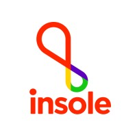

Data Analyst at @ LabTelemed | Data Science & AI
Engenheiro de Automação e Controle (UFPE) e Mestrando em Ciência da Computação (UFSC). Especialista em tradução de requisitos de negócio, automatização de processos, engenharia e análise de dados.
Engenheiro de Automação e Controle e Mestrando em Ciência da Computação
Engenheiro de Automação e Controle pela UFPE, me desenvolvi e qualifiquei nas áreas de Business Intelligence e Analytics. Atualmente, desenvolvo pesquisa na área de Computação Distribuída e Inteligência Artificial, por meio do mestrado acadêmico do Programa de Pós-Graduação em Ciência da Computação da UFSC.
Profissional versátil e adaptativo. Possuo experiências multidisciplinares em diversos campos do conhecimento, como Energia Solar, Construção Civil e Telemedicina. Trabalhei em ambientes de laboratórios de pesquisa, startups e multinacionais.
Minha trajetória no mercado e em pesquisa
Trabalho na interseção de análise de dados de saúde, IA e sistemas de telemedicina. Desenvolvo pipelines analíticos, modelos baseados em SQL e dashboards de BI (Apache Superset). Pesquisa em IA para saúde focada em aprendizado federado e visão computacional para interpretação automatizada de ECG.
Responsável pelo desenvolvimento de produtos nas áreas de Business Intelligence, Analytics, Robotic Process Automation (RPA) e Digital Process Automation (DPA).
Contribuição para o desenvolvimento do Sistema de Gestão da Qualidade como parte do projeto de transformação digital do Departamento de Cultura e Turismo do Governo de Abu Dhabi (UAE).
Desenvolvimento de soluções Power Platform, modelagem de bancos de dados relacionais e criação de relatórios de BI. Aplicação de IA com AI Builder para processamento de manifestos e automação de assinatura documental em Python.

Integração de Revit com SQL Server, desenvolvimento de processos ETL com Pentaho e Python, e automação RPA com Selenium e Playwright. Gestão de bancos de dados e níveis de permissão.
Educação e pesquisa acadêmica
Foco em Computação Paralela e Distribuída.
Entre em contato para oportunidades ou colaborações